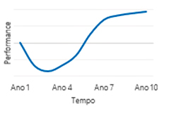
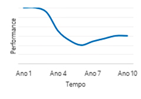
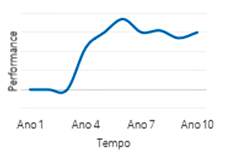

O que é Private Equity?
Pool de capital gerido profissionalmente para construção de portfólios através de investimentos em empresas privadas.
Envie sua oportunidade
Pool de capital gerido profissionalmente para construção de portfólios através de investimentos em empresas privadas.
Período em que o Gestor recebe compromissos de investimentos dos investidores. O capital comprometido é chamado ao longo da vida do fundo conforme a necessidade de Gestor para realização de investimentos e/ou cumprimento de obrigações do Fundo do segundoe terceiro ano.
Nesta fase ocorre a seleção das empresas de portfólio por meio de um rigoroso processo de diligência. O Gestor realiza chamadas de capital para efetivar o aporte dos recursos nas empresas.
O gestor inicia o processo de saída das empresas investidas tipicamente via IPO ou através de venda para um comprador estratégico. O capital oriundo destas saídas é devolvido aos investidores em forma de distribuições. Saídas parciais podem começar a ocorrer a partir do segundo e terceiro ano.
| Primários | Secundários | Diretos |
|---|---|---|
Definição |
||
Investimentos em outros fundos |
Compra secundária de posições |
Investimentos diretos em empresas |
Principais Benefícios |
||
|
Relacionamento com os principais gestores do mercado Oportunidades adicionais de investimentos secundários e diretos Diversificação do Portfólio |
Deslocamento positivo da Curva-J Maior visibilidade da construção do portfólio Potencial de liquidez dos ativos no curto prazo |
Seleção de ativos específicos com alto potencial de geração de valor Balanceamento da composição do portfólio Transações tipicamente com custo reduzido e alta geração de valor |
Comportamento da Curva-J |
||
|  |  |  |
É o gráfico que ilustra o retorno (TIR) de um fundo de Private Equity ao longo do tempo. Assemelha-se a um “J” pois nos primeiros anos de fundo (período de investimento) o retorno é impactado negativamente pelos custos do fundo e investimentos ainda marcados ao preço de aquisição ou ainda em fase inicial maturação. A medida que os desinvestimentos vão sendo realizados ou os investimentos são reavaliados positivamente, os retornos do fundo aumentam. A “quebra” desta curva é o momento que o retorno do investidor começa a ser positivo.
(Quantidade de Distribuições Recebidas) / (Valor Total do Capital Investido)
O MOIC, multiple over capital invested é uma métrica utilizada para indicar o retorno do investidor, sem considerar a passagem do tempo. O múltiplo mostra o valor total do portfólio ou da empresa em termos do quanto se valorizou ou desvalorizou em relação ao valor investido, considerando tanto o valuation da participação aferido no momento (valor não realizado) quanto eventuais dividendos ou recursos recorrentes de desinvestimentos parciais que tenham ocorrido (valor realizado).
Classifica-se investimentos como "realizados" se tiverem i) um valor não realizado inferior a 20% do valor total ou então aqueles que tiveram saídas totais dos gestores.
Total Value To Paid In= (Quantidade de Distribuições Recebidas + Valor Patrimonial Líquido Atual) / (Valor Total do Capital investido)
Taxa Interna de Retorno (“TIR") de investimentos no "nível de fundo", exclui taxas pagas por LPs ao Gestor, tais como taxas de administração e juros carregados. Para investimentos realizados há menos de um ano.
Taxa Interna Anualizada de Retorno (“TIR") de investimentos no 'nível LP', incluindo taxas como taxas de administração e realizadas juros pagos ao Gestor.
Remaining Value To Paid In = (Valor patrimonial líquido atual) / (Valor total do capital investido).
A razão de capital investido em investimentos realizados que foram vendidos por um valor inferior a 1,0x sua base de custo original, dividido pelo capital total investido em todos os investimentos realizados.
A razão de capital investido em investimentos realizados que foram vendidos por um valor inferior a 0,5x sua base de custo original, dividido pelo capital total investido em todos os investimentos realizados.